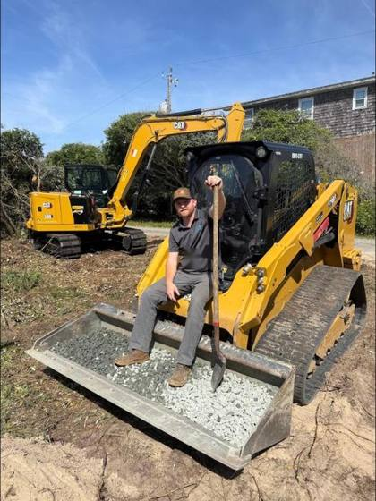
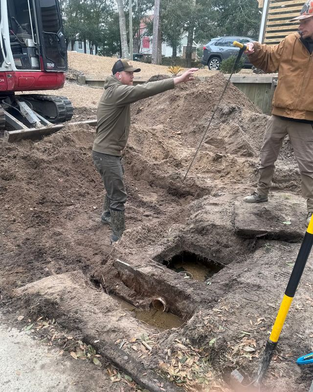

Installation, repair, pumping, inspections and drainfields across northeastern North Carolina and southeastern Virginia. Licensed, insured, and answering the phone when your yard is flooding at 10pm.
One crew handles the whole job, permit through backfill. No juggling three contractors to get a tank replaced.

Certified Infiltrator products installer. Chamber style leach fields that handle tight lots and difficult soils better than rock and pipe.

Traditional gravel and pipe drainfields installed to spec when that is the right call for the site and the soil.

Routine pump outs and full maintenance on a schedule that keeps your system out of trouble. Same day service when we can fit you in.

Cracked tank lids, failed pumps, collapsed lines, broken risers. We dig it, diagnose it honestly, and fix it right the first time.

Soggy yards, backed up lines, failing fields. We repair and replace drainfields and expand existing fields when a home outgrows its system.

Ditching, drainage, grading and site work. Northeastern NC is flat and wet, so moving water off a property is half the battle.
Stuarts Septic & Land is owned and run by Tyler Stuart out of Coinjock. When you call, you get somebody who works on septic systems for a living, not a dispatcher reading from a script.
Northeastern North Carolina has its own problems: high water tables, sandy and clay soils sitting side by side, tight coastal lots, and county health departments with real requirements. We work here every day and we build systems that hold up here.


Every photo below is a system we installed or repaired. No stock images.
“I peeked out my front door and saw water coming out of my front yard where my septic tank is. I called Stuarts Septic and they answered right away. I was able to speak with Tyler, and within three days from the initial contact the job was handled.”
“Highly recommend Tyler. He was able to fit us in for a same day pump out at a reasonable price. We have an older septic system and had questions about its condition and maintenance. He took the time to answer our questions and was very helpful, courteous and informative.”
“Stuarts Septic & Land were fantastic in an emergency situation. An entire septic system was replaced in two days, even after a snowstorm and heavy winds. These guys are top of the line and were below the price of others who gave estimates (and we got other estimates). Fantastic job!”
Backups, overflows and failed pumps get triaged ahead of routine work. Call and tell us what you are seeing.
Open for emergencies 24/7 ☎ Call (252) 489-8773